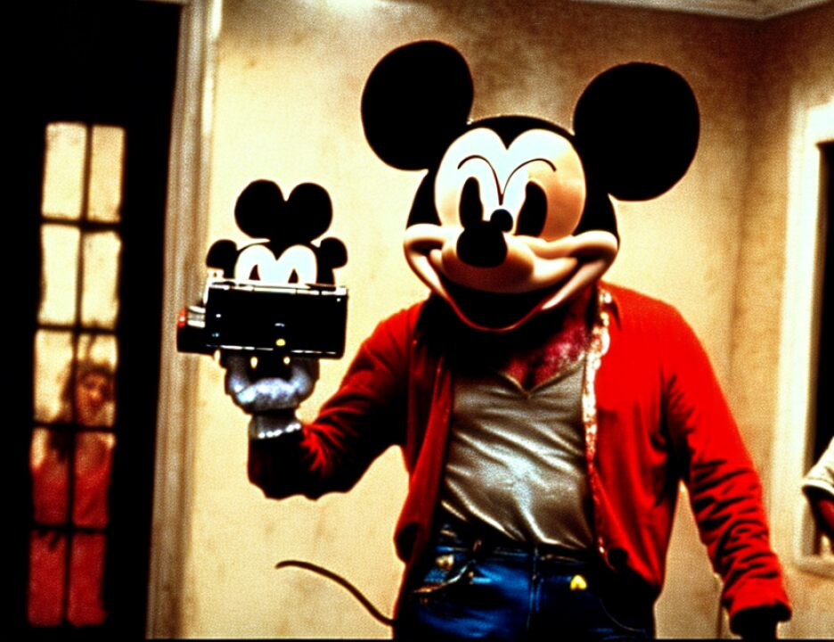

3 the defendants. What your Honor did was strike some items,
4 and then also confine some items. So creating a revised
5 notice does nothing to change what it is the defense is
6 anticipating.
7 THE COURT: You know, and I say this over and over
8 again, this is a complicated case, but there has not been a
9 single surprise in this case. There has not been an issue
10 which has arisen which would cause people to be burning
11 midnight oil in the library which was not known a long time
12 ago, and it doesn't take a great genius to look at the special
13 verdict form and consider all the possible combinations and
14 permutations.
15 You know I don't like to appear to be a tyrant, but I
16 am concerned that things move expeditiously in consideration
17 of the jury and selfishly for all of us. You know the longer
18 things drag out, the greater the risk there is of some juror
19 becoming ill or otherwise unavailable, and this huge
20 investment of time, effort and money in this jury is something
21 that we can't take lightly.
22 So the answer is that if the jury comes in with a
23 verdict this week, and we're not sitting on Friday, yes, we
24 will start on Tuesday.
25 MR. COHN: I understand and I wasn't trying to
6435
1 postpone it. What I was asking is for an advance of the
2 government's death notice. We're, you know -- look, Judge, I
3 seem to be -- it seems to me if you don't like playing the
4 tyrant, I don't like being the person who is always pressing
5 you to be it. But the fact is that if we had not spent the
6 night looking at your charge for this morning, which you
7 resisted and I proposed, we would not have had as good a
8 charge, and that's the reality of it. And the reality is that
9 there are fair notions of notice pleading that we're trying to
10 get some minimal time to respond to, to prepare our case. I
11 don't care whether --
12 THE COURT: There are certain matters that I
13 specifically left open until this point, and we'll add that to
14 the agenda.
15 MR. COHN: Thank you.
1